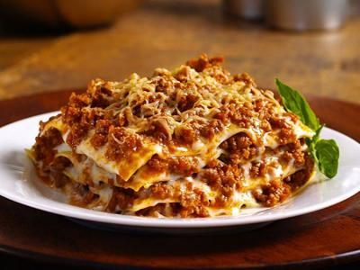

Lasagna

Description
Lasagna is a type of pasta, possibly one of the oldest types, made of very wide, flat sheets.
Either term can also refer to an Italian dish made of stacked layers of lasagne alternating
with fillings such as ragù (ground meats and tomato sauce),
vegetables, cheeses (which may include ricotta, mozzarella, and parmesan),
and seasonings and spices, like Italian seasoning, such as garlic, oregano and basil.
The dish may be topped with grated cheese, which becomes melted after baking.
Typically, cooked pasta is assembled with the other ingredients and then baked in an oven.
The resulting casserole is cut into single-serving square portions.
Ingredients
- 2 teaspoons extra virgin olive oil
- 1 pound ground beef chuck
- 1/2 medium onion, diced (about 3/4 cup)
- 1/2 large bell pepper (green, red, or yellow), diced (about 3/4 cup)
- 2 cloves garlic, minced
- 3 ounces tomato paste (half a 6-ounce can)
- 1 (14 ounce) can crushed tomatoes
- 2 tablespoons chopped fresh oregano, or 2 teaspoons dried oregano
- 1/4 cup chopped fresh parsley (preferably flat leaf), packed
- 1 tablespoon Italian seasoning
- 1 pinch garlic powder and/or garlic salt
- 1 tablespoon red or white wine vinegar
- 1 tablespoon to 1/4 cup sugar (to taste, optional)
- Salt
- 1/2 pound dry lasagna noodles (requires 9 lasagna noodles - unbroken)
- 15 ounces ricotta cheese
- 1 1/2 pounds (24 ounces) mozzarella cheese, grated or sliced
- 1/4 pound (4 ounces) freshly grated Parmesan cheese
Step-by-Step
- Put pasta water on to boil
- Brown the ground beef
- Cook the bell pepper, onions, garlic, add back the beef
- Transfer to medium sized pot, add tomatoes and remaining sauce ingredients to build the sauce
- Boil and drain the lasagna noodles
- Heat the oven to 375°F
- Assemble the lasagna
- Bake
- Cool and serve
Main page